Razones no le faltan.
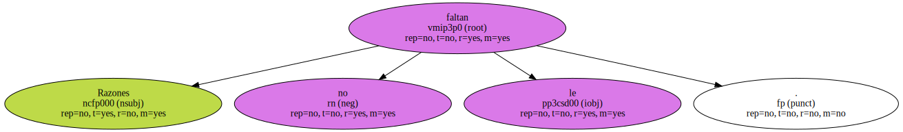Pero en realidad no se trata , ni mucho menos , de un fenómeno parapsicológico , sino de un revolucionario alarde tecnológico ideado por Erich Sutter , extrovertido físico del Instituto de Ciencias Visuales Smith-Kettlewell de San Francisco.
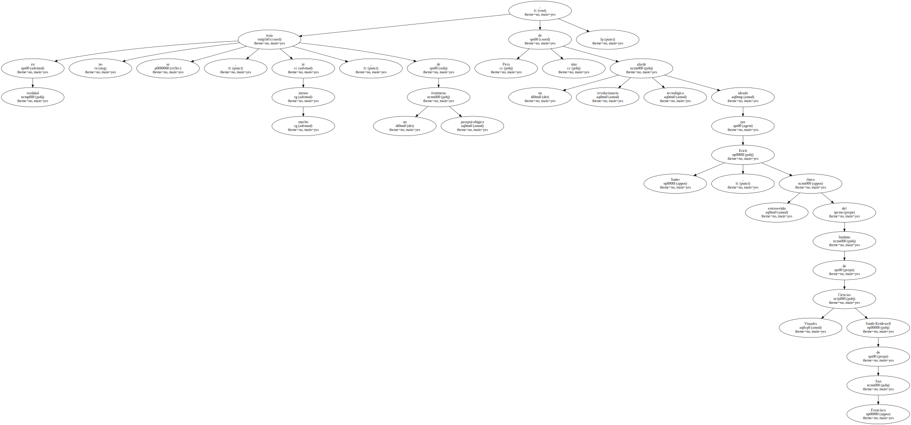El invento permite a personas totalmente impedidas llevar a cabo infinidad de tareas con tan sólo mirar fijamente a la pantalla de un ordenador.
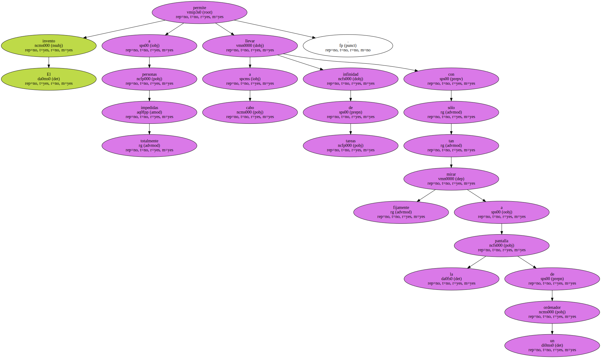Sutter y sus colegas han aprendido a dar caza y reconocer unas determinadas ondas cerebrales generadas ante distintos estímulos visuales - lo que ellos llaman la respuesta cerebral de interfase o BRI - para luego jugar con el sofisticado programa de ordenador.

Sutter y sus colegas han aprendido a dar caza y reconocer unas determinadas ondas cerebrales generadas ante distintos estímulos visuales - lo que ellos llaman la respuesta cerebral de interfase o BRI - para luego jugar con el sofisticado programa de ordenador.

Sutter y sus colegas han aprendido a dar caza y reconocer unas determinadas ondas cerebrales generadas ante distintos estímulos visuales - lo que ellos llaman la respuesta cerebral de interfase o BRI - para luego jugar con el sofisticado programa de ordenador.
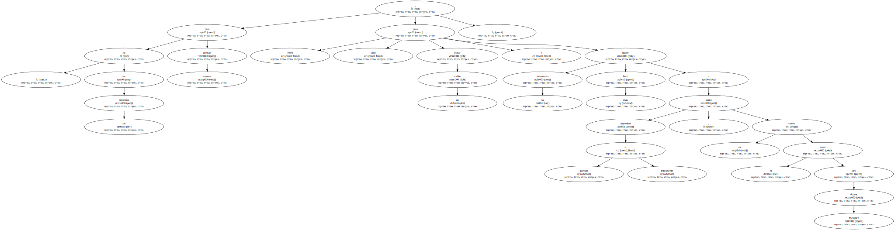Sutter y sus colegas han aprendido a dar caza y reconocer unas determinadas ondas cerebrales generadas ante distintos estímulos visuales - lo que ellos llaman la respuesta cerebral de interfase o BRI - para luego jugar con el sofisticado programa de ordenador.
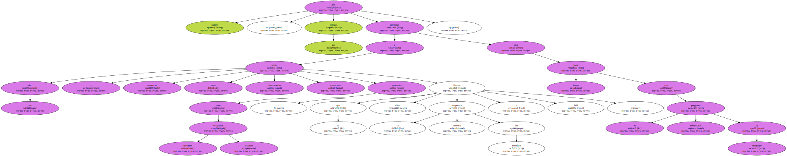Lo que Isaac Asimov planteaba para un futuro lejano en su libro Foundations Edge - aquí un héroe espacial tripula su nave con el poder de la mente - Sutter lo ha trasladado al mundo real.
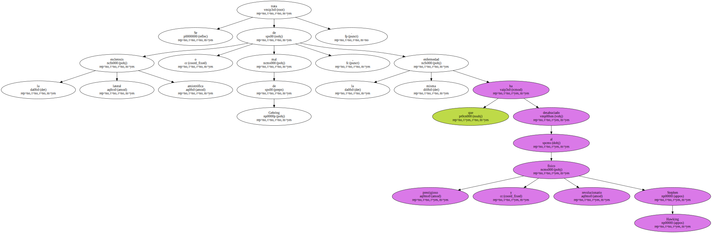Pero no para pilotar aviones , en un principio , sino para echar un cable y hacer la existencia más fácil a gente parcial o totalmente impedida , como es el caso del doctor Meagher.
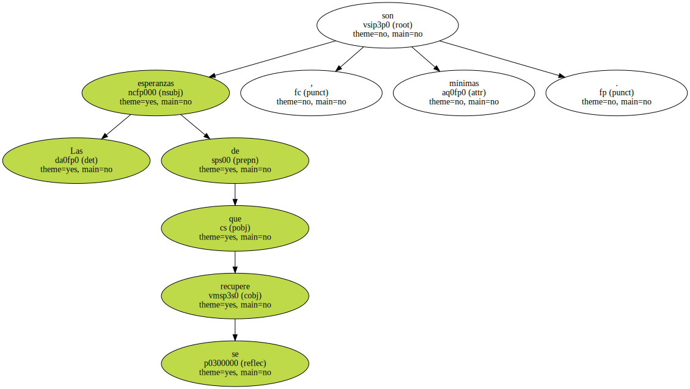Este , a sus cuarenta años de edad , sufre una terrible e imparable degeneración nerviosa.
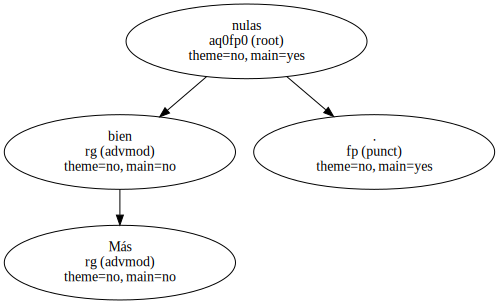Se trata de la esclerosis lateral amiotrófica o mal de Gehring , la misma enfermedad que ha desahuciado al prestigioso y revolucionario físico Stephen Hawking.
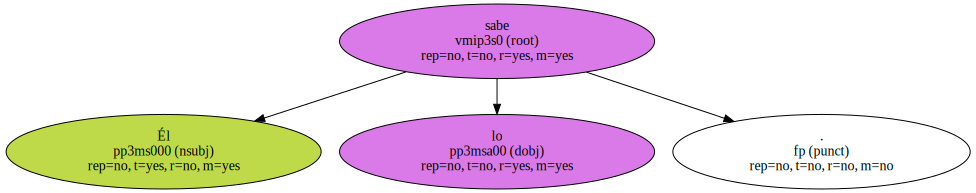Las esperanzas de que se recupere , son mínimas.
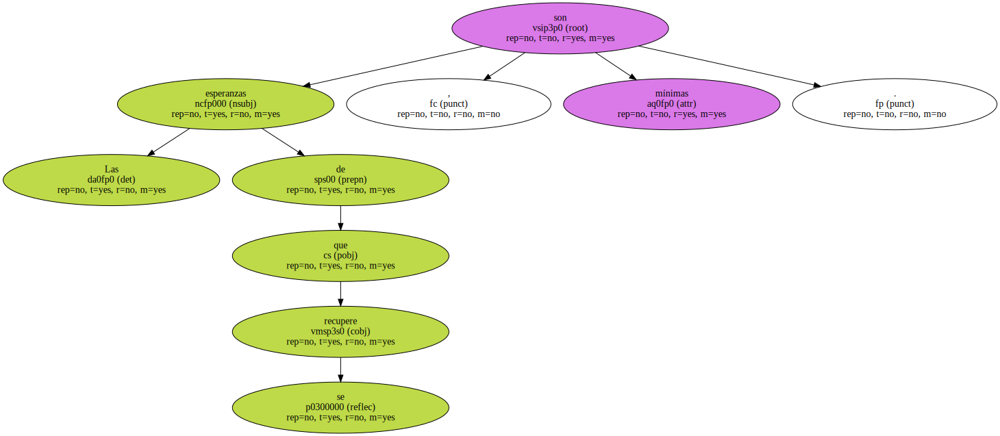Más bien nulas.
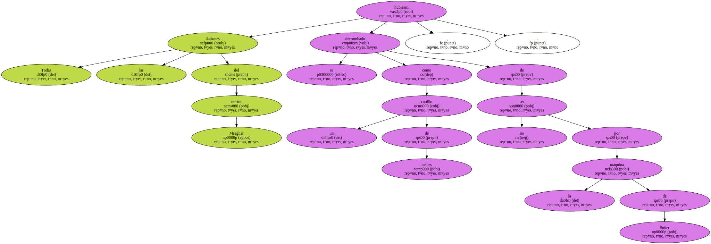Él lo sabe.
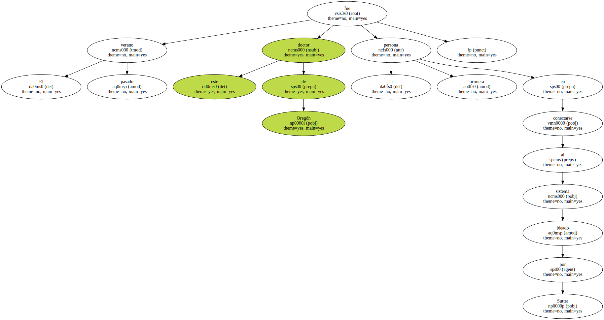Y a pesar de que su vida depende minuto a minuto de la ayuda de los demás , aún sueña todas las noches con volver a tomar los mandos del aeroplano que conserva en un hangar próximo a la casa y volar alrededor del mundo.

Todas las ilusiones del doctor Meagher se hubiesen derrumbado como un castillo de naipes , de no ser por la máquina de Sutter.
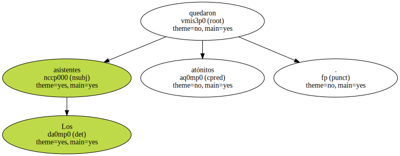El verano pasado este doctor de Oregón fue la primera persona en conectarse al sistema ideado por Sutter.
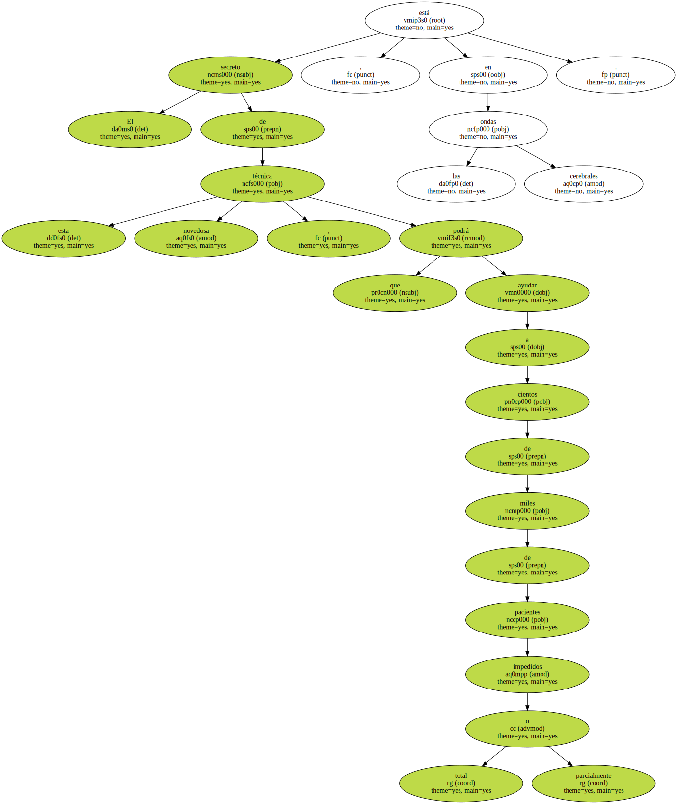Después de meses de intensos estudios y observaciones , los resultados han sido presentados en 1989 ante la comunidad científica , en la reunión anual de la Asociación Norteamericana de Avances Científicos , celebrada en San Francisco.

Los asistentes quedaron atónitos.
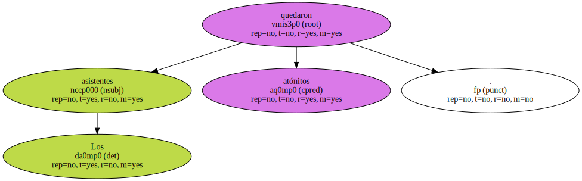El secreto de esta novedosa técnica , que podrá ayudar a cientos de miles de pacientes total o parcialmente impedidos , está en las ondas cerebrales.
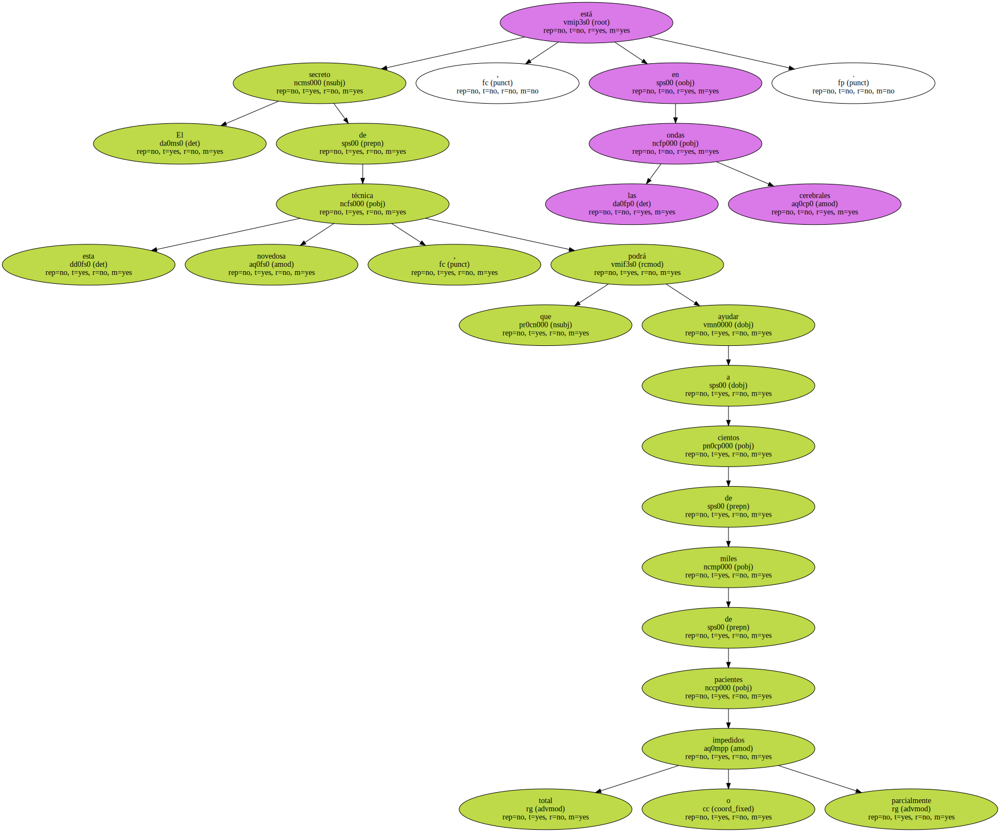